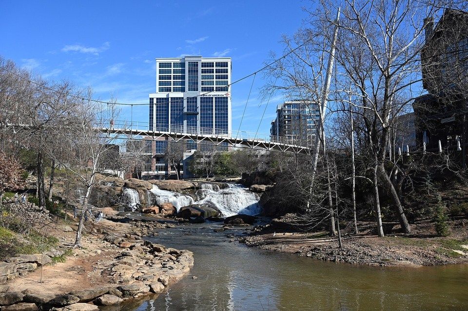

On Falls Park · Lodge style
Grand Bohemian Lodge
A lodge-style hotel right beside Falls Park and the Reedy River, ranked among South Carolina’s best hotels for 2026. Wake up to the sound of the falls.
Official details for Grand Bohemian LodgeLand downtown. Leave the car behind.
A waterfall in the middle of the city, a tree-lined Main Street full of restaurants and the Blue Ridge on the horizon. Greenville Downtown Airport is minutes from it all.

Time illustration: direct distance at 150 KTAS plus 15 minutes for departure and arrival, matching the discovery page. Use ForeFlight for your actual flight plan.
Check the weekend weather at both ends → Flight category, your minimums and the crosswind on the best runway.
KGMU, Greenville Downtown Airport, is a towered field just a few miles from Main Street. It is one of the closest-in airports in this collection.
100 Tower Drive, Greenville, SC 29607
Full-service and self-serve 100LL are listed. Ask about handling fees, two-night parking, waivers with fuel and after-hours access. Directory prices vary, so call ahead; no live price is shown.
GMU is busy with business jets and training traffic. Review the airport diagram, tower procedures and the Greenville-Spartanburg (GSP) Class C airspace nearby.
Three different stays. Rates and availability need travel dates.
A lodge-style hotel right beside Falls Park and the Reedy River, ranked among South Carolina’s best hotels for 2026. Wake up to the sound of the falls.
Official details for Grand Bohemian LodgeA grand 1925 hotel on Main Street with soaring ceilings and marble details, restored with Old World glamour. The classic downtown choice.
Official details for The Westin PoinsettA newer luxury hotel set on a large green estate a short drive from downtown, also ranked among the state’s best for 2026. Choose it for quiet and space.
Official details for Hotel HartnessA small, European-style luxury hotel in the foothills near Travelers Rest, about 30 minutes from downtown, with mountain views and a quiet setting. Pair it with a ride on the Swamp Rabbit Trail.
Official details for Hotel DomestiquePrices and availability for your dates, through our partner Stay22. This is an affiliate link: we may earn a commission at no cost to you. The picks above are never paid.
Greenville’s restaurant scene now has Michelin recognition. Reserve the special dinner well ahead.
Handmade pasta and an oyster bar overlooking Main Street, recognized by Michelin. Lively and polished; ask for a window or balcony table.
Official details for JiannaChef Joe Cash’s restaurant, awarded a Michelin star. The special-occasion dinner of the weekend. Book as early as reservations open.
Official details for ScoundrelA downtown institution since 1997 for Southern cooking, with a wine list that won a Wine Spectator Grand Award in 2025. Confirm brunch hours.
Official details for Soby’sA newer West End steakhouse at Markley Station, opened in 2026, known for house dry-aged steaks and a deep wine and spirits list. A short walk from Unity Park and Falls Park.
Official details for Cork & CleaverMost of Greenville’s best experiences are free and within walking distance of Main Street.
Reedy River Falls in the middle of the city, with gardens and a curved pedestrian suspension bridge. Early morning and evening are the quietest and most beautiful times.
A paved greenway of more than 20 miles along the Reedy River, from downtown toward Travelers Rest. Rent comfort bikes or cruisers at Bike The Rabbit on North Main Street, a short walk from the trail, and ride to lunch in Travelers Rest. For e-bikes, Pedego Greenville at Hampton Station sits right beside the trail.
Bike The Rabbit on the mapA large riverside park on the trail, with a food hall nearby for a casual lunch.
Tree-lined, walkable and full of patios, galleries and shops, from local boutiques to the classic Mast General Store. A free trolley runs the length of Main Street. Look for the small bronze mice hidden along the street. Use the visitor bureau’s interactive map to plan a shopping walk.
Downtown walking mapWith a car, the mountains are under an hour away: waterfalls, overlooks and small towns. Save it for a longer stay.
Downtown is the bar crawl; pick one or two stops.
Make a glass at Soby’s part of the weekend, even if brunch is your meal there.
A drink by the fire or overlooking Falls Park, if you are staying there or passing through.
Greenville has a lively brewery scene in and around downtown. Ask locally which taprooms are closest to your hotel.
This prototype links to current calendars. It does not yet match events to your travel dates.
Games at Fluor Field, a ballpark modeled on Fenway, walkable from downtown. Check the home schedule.
Schedule & tickets for Greenville DriveBroadway tours, concerts and shows by the river, steps from Main Street. Check what is on for your dates.
A large food and music festival on Main Street each fall. Fun and crowded; book lodging early.
Check the destination calendar when choosing a weekend, and confirm dates and tickets with the organizer.
A sample Friday–Sunday weekend with no car needed: the falls, the trail and two standout dinners. No bookings or availability confirmed.
Land at KGMU and ride ten minutes to Main Street.
Falls Park and Liberty Bridge, then lunch on Main Street.
A short bike ride on the Swamp Rabbit Trail, then back to the airport.
Land at KGMU, subject to the actual flight plan, and ride downtown.
Lunch on Main Street, then Falls Park and Liberty Bridge. Check in when your room is ready.
Dinner at Jianna.
Rent bikes and ride the Swamp Rabbit Trail, stopping at Unity Park.
Back downtown to browse Main Street, or catch an afternoon Greenville Drive game in season.
Dinner at Scoundrel, then a nightcap by the falls.
Brunch at Soby’s and a last walk by the river.
Ride back to the FBO with ample time for aircraft preparation.
Let weather and your flight plan set the departure.
Rent a car for a Blue Ridge drive: waterfalls, overlooks and small towns under an hour away.
Unity Park and The Commons food hall, or a Greenville Drive game in season.
A show at the Peace Center.
These details make the difference between an appealing list and a usable getaway.
Scoundrel first if it is the reason for the trip, then lodging, the Friday dinner and bikes.
Summers are hot; fall is the busiest and most beautiful season.
GMU sees plenty of jet traffic. Allow time for taxi and tower instructions.
Hotel rates, tickets and restaurant hours are date-dependent. No availability or live price is implied here.
Picks and links reviewed by WingAway Weekends. Hours, prices, menus and availability change often, so confirm directly with each place before booking. Spotted something out of date, or have a favorite we missed? Email us at hello@wingawayweekends.com.
WingAway Weekends helps you discover the destination. Use ForeFlight and current official aviation information for route, performance, weather, NOTAMs and preflight decisions. Flight planning and PIC responsibility stay with the pilot.
One fly-in weekend, a Fly to Lunch pick and the newest guides, about once a month.
Free. Unsubscribe anytime.